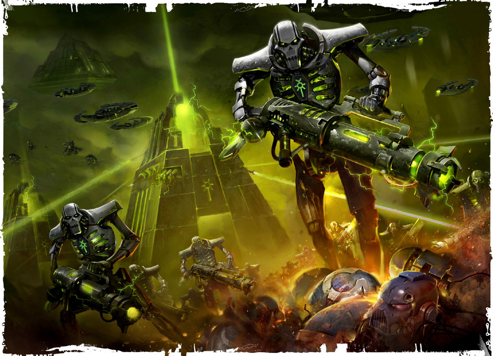
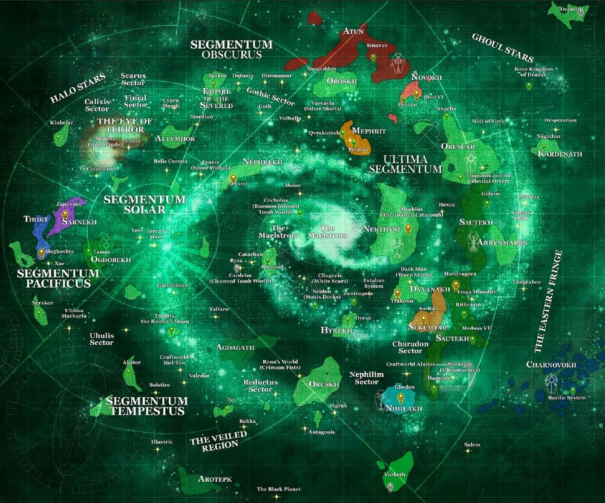

<<<<<NECRONS>>>>>
A more resilient foe would be hard to find. The cadaverous forms of their warriors push forward regardless of losses and can withstand damage that should destroy them. They wield the most abominable of technologies, necessitating a wary eye being kept on all Tech Priests operating within an area of known Necron activity. Their tomb fortresses have been observed throughout the galaxy, often buried within the planet they occupy. Small comfort may be taken in that they are inert until disturbed.

Last dispatched image from Ultramarines 3rd Company, Kalndar Primas

Galactic necron activity